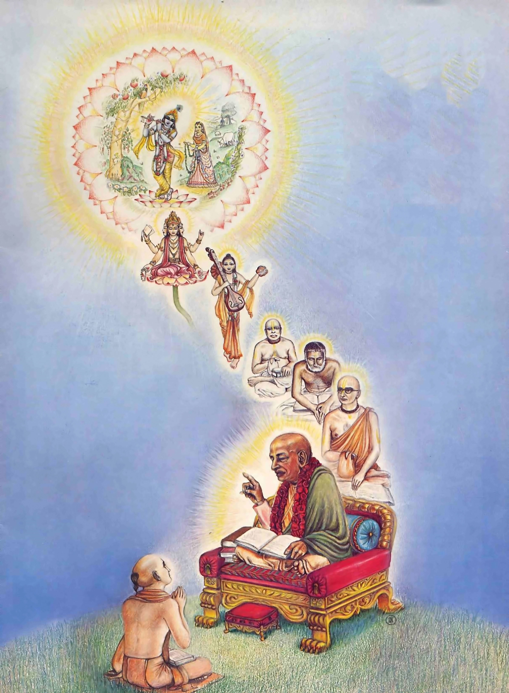
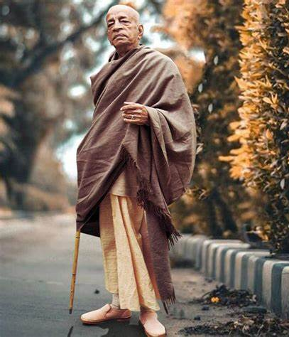

Lineage or Sampradaya
Brahma-Madhva-Gaudiya Sampradaya
There are only four lineages for receiving this knowledge and the source of all lineage is Lord Krishna, the supreme personality of Godhead.
Lord Krishna gave this knowledge to Lord Brahma who is the guru of Narada Muni, who is the guru of Vyasadeva, and Vyasadeva is the guru of Madhvacarya.
In the later age the Brahma Sampradaya was handed down through Madhva Acarya; in this Madhva Acarya disciplic succession came Isvara Puri. This Isvara Puri was accepted as the Spiritual Master of Lord Caitanya (The Supreme Personality of Godhead). Thus in the disciplic succession of Caitanya Mahaprabhu (who belonged to Gaudadesa), we are known as the followers of Brahma-Madhva-Gaudiya Sampradaya.
Extracted from the Purports of Srila Prabhupada. The Disciplic Succession (Guru Parampara) ;
1. Krishna 2. Brahma 3. Narada 4. Vyasa 5. Madhva 6. Padmanabha
7. Narahari 8. Madhava 9. Akshobhya 10. Jaya Tirtha 11. Jnanasindhu 12. Dayanidhi 13. Vidyanidhi 14. Rajendra
15. Jayadharma 16. Purusottama 17. Brahmanya Tirtha 18. Vyasa Tirtha
19. Lakshmipati 20. Madhavendra Puri 21. Ishvara Puri, (Nityananda, Advaita) 22. Lord Chaitanya 23. Rupa Goswami, (Svarupa, Sanatana Goswami) 24. Raghunatha, Jiva Goswami 25. Krishnadasa 26. Narottama 27. Vishvanatha 28. Srila Jagannatha Dasa Babaji Maharaja,(Srila Baladeva Vidyabhushana) 29. Srila Bhaktivinoda Thakura 30. Srila Gaurakishora Dasa Babaji Maharaja 31. Srila Bhaktisiddhanta Sarasvati Thakura 32. AC Bhaktivedanta Swami Prabhupada
Followers of Hare Krishna Movement or ISKCON belong to this bonafide disciplic succession and are also known as Prabhupadanugas (or the followers of Srila Prabhupada).

His Divine Grace, A. C. Bhaktivedanta Swami Prabhupada
Prabhupada (1896-1977) was the principal teacher for thousands of people worldwide and will remain for ten thousand years through his books and instructions, including Patri das. He is regarded as the world’s pre-eminent exponent of the teachings and practices of Bhakti-yoga, outside of its roots in India.
A Disciple of Srila Bhaktisiddhanta
Born Abhay Charan De on September 1, 1896, in Calcutta, as a young man he became involved with Mahatma Gandhi’s civil disobedience movement. It was, however, a meeting with a prominent scholar and spiritual leader, Srila Bhaktisiddhanta Sarasvati, which proved most influential on young Abhay’s future calling. At their first meeting, Srila Bhaktisiddhanta asked Abhay to bring the teachings of Krishna to the English-speaking world. Deeply moved by Srila Bhaktisiddhanta’s devotion and wisdom, Abhay became his student and dedicated himself to carrying out his mentor’s request. But it wasn’t until 1965, at the age of seventy, that he would set off on his mission to the West.

Around the world
In these eleven years, Srila Prabhupada circled the globe twelve times, bringing the teachings of Bhakti to thousands of people on six continents. Men and women from all backgrounds came forward to understand his message. With their help, Srila Prabhupada established centers and projects throughout the world including temples, self-sustainable communities, educational institutions, and what would become the world’s largest vegetarian food relief program. With the desire to nourish the roots of Bhakti in its homeland, Srila Prabhupada returned to India several times, where he sparked its revival. In India, he opened dozens of temples, including important centres in the holy towns of Vrindavan and Mayapur.
Most prominent contemporary authority on bhakti-yoga
He is especially respected as the world’s most prominent contemporary authority on bhakti-yoga, devotional service to the Supreme Person, Krishna, as taught by the ancient Vedic writings of India. He is also the founder-acharya of the International Society for Krishna Consciousness.Srila Prabhupada, as he’s known to his followers, translated and commented on over eighty volumes of the Vedas’ most important sacred bhakti texts, including the Bhagavad-gita—a concise handbook for understanding the purpose and goal of human life—and the multi-volume Srimad-Bhagavatam—an epic biography of Krishna, Krishna’s avatars, and His many devotees throughout the history of the universe.

Founder of ISKCON
In 1966, he founded the International Society for Krishna Consciousness (ISKCON). ISKCON is popularly known as the “Hare Krishna” movement, due to its members’ widespread practice of chanting the Hare Krishna mantra in public. Srila Prabhupada intended ISKCON to facilitate the association and education of bhakti-yoga practitioners, and his followers continue to spread that mission.
Gratitude for Srila Prabhupada
For millennia, the teachings of Bhakti had been concealed within Sanskrit and Indian vernacular languages, and the rich culture of Bhakti had been hidden behind the borders of India. However, today, millions around the globe express their gratitude to Srila Prabhupada for revealing the timeless wisdom of Bhakti to a world immersed in a hedonistic and distracted ethos. A. C. Bhaktivedanta Swami Prabhupada left his mortal body on November 14, 1977, in the holy town of Vrindavan, surrounded by his loving followers, who work together to carry on his work today.